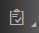
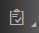

The XML validator validates the message payload in XML format against the configured XML
schema.
Prerequisites
You have the XML schema (XSD files) added in the .src.main.resources.xsd location of your
integration flow project. If you do not have the specified location in your project,
you need to create one first and then add the XSD files.
Context
You use this procedure to assign XML schema (XSD files) to validate the message payload in a
process step. The validator checks the message payload against configured XML
schema, and report discrepencies in message payload. If the validation fails, the
HCI system stops the whole message processing by default.
Procedure
-
In the palette, choose .
-
Position the cursor on the step and click.
-
Select the EDI Validator step.
-
In the Name field, enter an appropriate validator flow
step name.
-
In the XML Schema field, select
Browse.
-
Choose an XSD file that you want to use to validate the format.
Note
-
You can have references to other XSDs within the same project.
XSDs residing outside the projects cannot be referred.
-
You can enter a value less than 5000 for attribute
maxOccurs, in input xsd. You can also
enter unbounded, if you do not want to
check for max occurrence but would like to support any number of
nodes.
-
If there are any validation errors in the payload, the details of
the error is visible in MPL attachment. The link for the
attachment is available in MPL log.
- Use ${header.XmlValidationResult to get more
details on validation excecptions.
-
If you want to continue the processing even if the system encounters error
while validating, then select the check box Prevent Exception on
Failure.
Note If an exception occurs, then the error payload is added to
SAP_XmlValidationResult header.
-
Save the changes.
 

 Message Validator
Message Validator  .
.